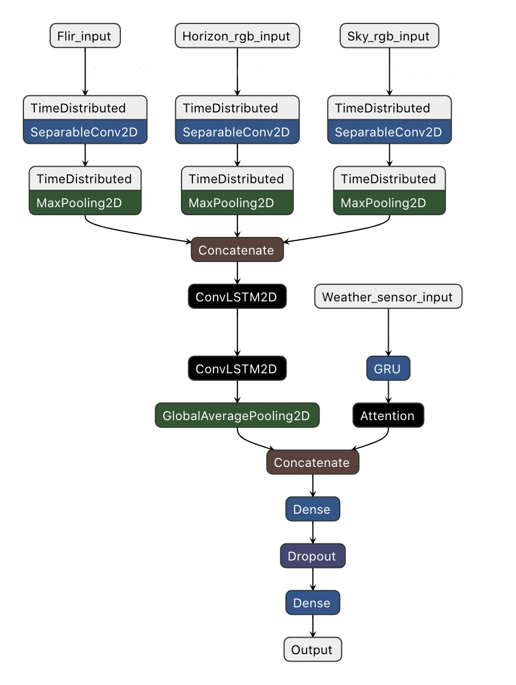

WeatherNet: Nowcasting Net Radiation over the Edge
Summer 2020
Prologue
In the summer of 2020, I was fortunate enough to be able to get a position as an intern at Argonne National Laboratory. I worked on the SAGE team whose task is to design a cyberinfrastructure for AI over Edge Computing. This blog is a high-level (I mean high-high level) overview of the research I did over summer. I plan to submit this work as a poster and as a short paper to two conferences in which the full extent of the methodology and results will be shown. As updates occur, I will post them here on the blog. To learn more about the SAGE project, please visit their website.
What is Nowcasting?
Nowcasting is the task of weather forecasting within a horizon period of twenty-four hours.3 By being able to accurately nowcast, abrupt weather changes can be announced earlier. This could allow people to have the needed time to prepare for weather-related dangers such as hail, thunder, or tornados.
Nowcasting and Deep Learning
Traditionally, nowcasting is performed by Numerical Weather Prediction (NWP) models that use radar data. However, recently, many scientists have developed ways to conduct nowcasting using Deep Learning and have achieved great success. As of March 2020, Google Research released a paper documenting a Deep Learning model that performs nowcasting called MetNet.1 MetNet was able to outperform the High-Resolution Rapid Refresh (HRRR) system, the state of the art NWP method available from NOAA (the National Oceanic and Atmospheric Administration) for precipitation forecasting within a 7-8 hour window. Both NWP models and Deep Learning nowcasting models use radar data as input. Radar data does provide powerful insight into macro atmospheric activity. However, I hypothesize that adding data from ground-based sensors to nowcasting models could improve nowcasting for precise locations. To be able to accurately nowcast for a precise location, it is reasonable to assume that information about the site is needed- which is not provided through traditional radar data.
To explore the plausibility of using ground-based sensor data to enhance the performance of a nowcasting model, I sought out to develop a rudimentary experiment that would provide insight into my hypothesis. I desired to construct a Deep Learning model that only used ground-based sensor data to perform nowcasting. The reasoning was that if I was able to perform nowcasting using only ground-based sensor data (which is unique from radar data), then it would be plausible that combining ground-based sensor data with radar data could create a more powerful model. Vice-versa, if a Deep Learning model that only used ground-based sensor data could not perform nowcasting to any degree, it would be unlogical to assume that combining ground-based sensor data and radar data would improve a model's ability to nowcast- thus voiding the plausibility of my hypothesis.
Data Management with SAGE
For my experiment, I employed SAGE, a Cyber infrastructure for AI at the Edge. SAGE allowed me to access a weather tower and a node with a ground-based camera system, located on the Argonne National Laboratory campus, with ease to harvest data. The weather tower collected the following metadata: wind speed, wind direction, precipitation, heat flux, irradiation, net radiation, vapor pressure, and dew point temperature. The camera system consisted of three cameras: a sky facing RGB camera, a horizon-facing RGB camera, and an infrared (FLIR) camera. Through the ground-based weather sensors and cameras, I was able to collect a dataset for my desired experiment.

Upon collecting the data, I restructured the data into fifteen-minute samples. Then the data was separated into four-element tuples consisting of data samples from an hour at 00, 15, 30, and 45 minutes. For my experiment, I decided to nowcast net radiation. Net radiation is the difference between incoming solar radiation absorbed by the Earth's surface and the radiation reflected back into space.2 Thus, my model's input data was four samples from the previous hour consisting of images from each camera and weather sensor data, while my model's prediction value was a future period's net radiation amount.
WeatherNet
With the data consisting of images from the camera and tabular data from the weather sensors in the form of a time-series, the Deep Learning model used was a Convolutional LSTM variant, named WeatherNet. Convolutional LSTM's allow images in the form of time series to be used as input and can learn the temporal relationships between the images. This allowed WeatherNet to learn changes in the weather over time from the camera's images.4 By further modifying the traditional Convolutional LSTM, WeatherNet was also able to take as input, not just images, but also the tabular weather sensor data. WeatherNet was then trained to nowcast net radiation for 15, 30, 60, 75, and 90 minute horizon periods.
Diagram of WeatherNet
As mentioned, WeatherNet was trained to nowcast net radiation for 15, 30, 60, 75, and 90 minute horizon periods. WeatherNet was able to nowcast net radiation at a high of eighty-percent accuracy for a fifteen-minute horizon and at a low of seventy percent accuracy for a ninety minute horizon.
Results of Experiment
| Horizon (Minutes) | 15 | 30 | 45 | 60 | 75 | 90 |
|---|---|---|---|---|---|---|
| Accuracy | 0.87 | 0.83 | 0.81 | 0.76 | 0.76 | 0.70 |
Conclusion
Through the positive results obtained from the experiment, my hypothesis of being able to gain useful data from ground-based sensors to perform nowcasting is supported. By being able to use SAGE, I was able to collect the needed data for my experiment.
Reference
[1] Casper Kaae Sønderby et al.MetNet: A Neural Weather Model for Precipitation Forecasting.2020. arXiv:2003.12140 [cs.LG].
[2] StoryMapJournal.URL:https://www.arcgis.com/apps/MapJournal/index.html?appid=93ed895dfa3343eb9b821a2933decdd8.
[3] Yong Wang et al.Guidelines for Nowcasting Techniques. Nov. 2017.ISBN: 978-92-63-11198-2
[4] Xingjian Shi et al.Convolutional LSTM Net-work: A Machine Learning Approach for
Pre-cipitation Nowcasting. 2015. arXiv:1506 .04214 [cs.CV].